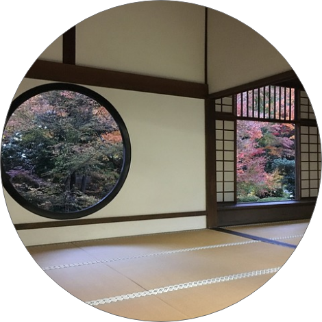

茶道とは

茶会に関わる様式や儀式を指します。
茶会を主催する亭主は半年〜1年ほどかけて客人が
お茶を楽しめるよう準備をしていきます。
客人もまた亭主のおもてなしに答えるために最大限の
礼儀を尽くして臨みます。
茶会に関わる様式や儀式を指します。
茶会を主催する亭主は半年〜1年ほどかけて客人が
お茶を楽しめるよう準備をしていきます。
客人もまた亭主のおもてなしに答えるために最大限の
礼儀を尽くして臨みます。
お茶を楽しむための食器のことです。
ご飯を盛る茶碗を茶碗というのは
お茶を飲む際に使用した椀にご飯を盛るように
なった為です。
抹茶を立てる為の道具です。
湯を加えた抹茶を
茶碗の中で混ぜます。
内穂と外穂を合わせて128本
が標準とされます。
お茶をたてるために、棗（なつめ）や茶入れから
抹茶をすくうために使われる、細長いさじです。
すくいやすいように丸みがつけられています。
 1月
白味噌餡、甘く煮たゴボウを白い求肥で半円型に包んでいます。
1月
白味噌餡、甘く煮たゴボウを白い求肥で半円型に包んでいます。
 11月
猪は多産であることから子孫繁栄を願う意味が込められています。
11月
猪は多産であることから子孫繁栄を願う意味が込められています。
| 1月 | 花びら餅 |
|---|---|
| 2月 | 椿もち |
| 3月 | 下萌 |
| 4月 | 鶯餅 |
| 5月 | 糖衣 |
| 6月 | 水無月 |
| 7月 | 水羊羹 |
|---|---|
| 8月 | 水饅頭 |
| 9月 | 栗きんとん |
| 10月 | 芋きんつば |
| 11月 | 猪の子餅 |
| 12月 | 浮島 |